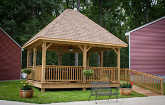

Skippers Creek Vineyard
Skippers Creek Vineyard is located on property owned by Debbie’s family for over 75 years. Growing up, dairy and tobacco farming filled her day with many hours of hard work. Today, sitting about 300 feet above sea level, the pastures thrive with five acres of viniferous vines overlooking the meadow and pond below. Charles and Debbie Zacharias are hard at work year-round tending to the vines and taking great care to produce some of the best wines in the region.
Upcoming Events
Saturday, September 20th
4:00 - 8:00 p.m.
Join us for an evening of wine, friendship, and music! Musical performance by East of Afton with special guest Martin Caplan.
Tickets are $20 in advance, $25 at the door.
Wine tastings
Wine tastings are available Saturdays and Sundays by appointment during the winter months. Please give us a call at 804-598-7291 or e-mail us at contact@skipperscreekvineyard.com if you are interested in a tasting or would like to know more information.
Skippers Creek Vineyard
965 Rocky Ford Rd
Powhatan, VA 23139
Directions on Google Maps
